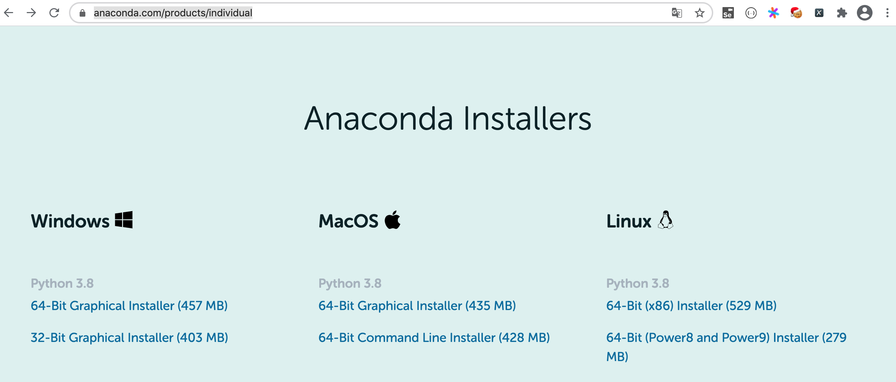
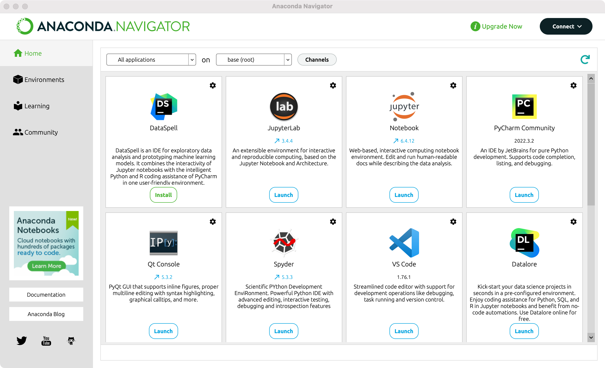
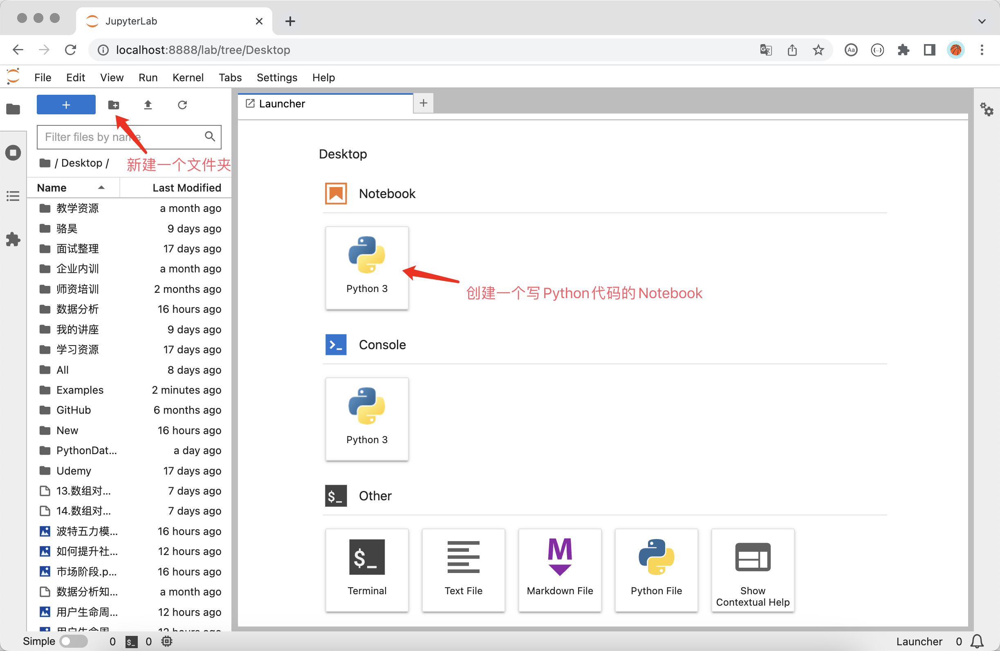
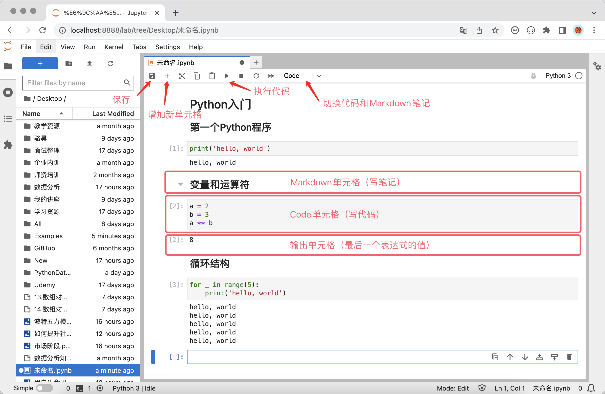
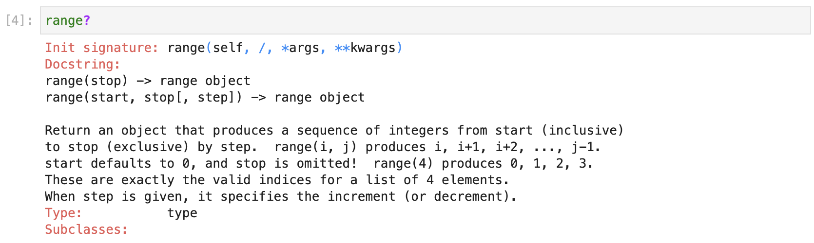
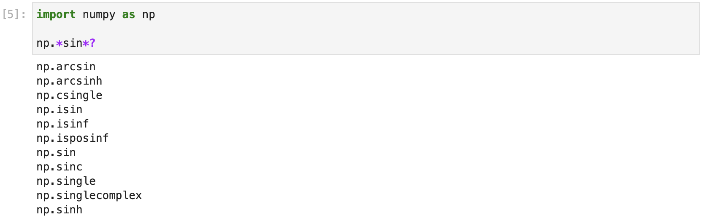
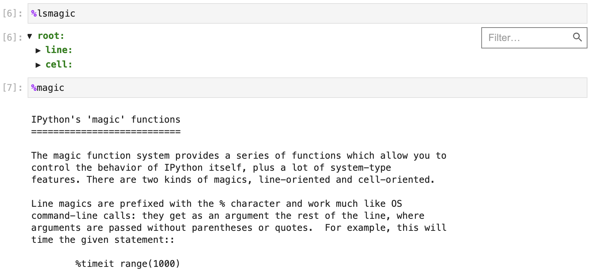

环境准备
如果希望快速开始使用 Python 处理数据科学相关的工作，建议大家直接安装 Anaconda，然后使用 Anaconda 中集成的 Notebook 或 JupyterLab 工具来编写代码。因为对于新手来说，先安装官方的 Python 解释器，再逐个安装工作中会使用到的三方库文件会比较麻烦，尤其是在 Windows 环境下，经常会因为构建工具或 DLL 文件的缺失导致安装失败，而一般新手也很难根据错误提示信息采取正确的解决措施，容易产生严重的挫败感。如果计算机上已经有 Python 解释器环境了，也可以直接使用 Python 的包管理工具 pip 安装 Jupyter，再根据实际工作的需要安装三方库，这种方式适合有一定经验的用户。
安装和使用 Anaconda
对于个人用户来说，可以从 Anaconda 的官方网站下载它的“个人版（Individual Edition）”安装程序，安装完成后，你的计算机上不仅拥有了 Python 环境和 Spyder（类似于 PyCharm 的集成开发工具），还拥有了与数据科学工作相关的近200个工具包，包括我们上面提到 Python 数据分析三大神器。除此之外，Anaconda 还提供了一个名为 conda 的包管理工具，通过这个工具不仅可以管理 Python 的工具包，还可以用于创建运行 Python 程序的虚拟环境。

如上图所示，可以通过 Anaconda 官网提供的下载链接选择适合自己操作系统的安装程序，建议大家选择图形化的安装程序，下载完成后双击安装程序开始安装。安装过程基本使用默认设置即可，完成安装后，macOS 用户可以在“应用程序”或“启动台”中找到名为“Anaconda-Navigator”的应用程序，运行该程序可以看到如下所示的界面，我们可以在这里选择需要执行的操作。

对于 Windows 用户，建议按照安装向导的提示和推荐的选项来安装 Anaconda（除了安装路径，基本也没有什么需要选择的），安装完成后可以在“开始菜单”中找到“Anaconda3”。
提示：可以选择 Miniconda 作为 Anaconda 的替代品，Miniconda 只会安装 Python 解释器环境和一些必要的工具，其他的三方库由用户自行选择安装。其实我个人并不喜欢 Anaconda，因为它是给小白用户使用的，我们有了 Python 环境以后完全可以按照自己的意愿来安装需要的三方库。
conda命令
对于非新手用户，如果希望使用 conda 工具来管理依赖项或者创建项目的虚拟环境，可以在终端或命令行提示符中使用 conda 命令。Windows 用户可以在“开始菜单”中找到“Anaconda3”，然后点击“Anaconda Prompt”或“Anaconda PowerShell”来启动支持 conda 的命令行提示符。新手用户如果想创建新的虚拟环境或管理三方库（依赖项），建议直接使用“Anaconda-Navigator”中的“Environments”，通过可视化的方式对虚拟环境和依赖项进行管理。
版本和帮助信息。
- 查看版本：
conda -V或conda --version - 获取帮助：
conda -h或conda --help - 相关信息：
conda list
- 查看版本：
虚拟环境相关。
- 显示所有虚拟环境：
conda env list - 创建虚拟环境：
conda create --name venv - 指定 Python 版本创建虚拟环境：
conda create --name venv python=3.7 - 指定 Python 版本创建虚拟环境并安装指定依赖项：
conda create --name venv python=3.7 numpy pandas - 通过克隆现有虚拟环境的方式创建虚拟环境：
conda create --name venv2 --clone venv - 分享虚拟环境并重定向到指定的文件中：
conda env export > environment.yml - 通过分享的虚拟环境文件创建虚拟环境：
conda env create -f environment.yml - 激活虚拟环境：
conda activate venv - 退出虚拟环境：
conda deactivate 删除虚拟环境：
conda remove --name venv --all说明：上面的命令中，
venv和venv2是虚拟环境文件夹的名字，可以将其替换为自己喜欢的名字，但是强烈建议使用英文且不要有特殊字符。
- 显示所有虚拟环境：
包（三方库或工具）管理。
- 查看已经安装的包：
conda list - 搜索指定的包：
conda search matplotlib - 安装指定的包：
conda install matplotlib - 更新指定的包：
conda update matplotlib 移除指定的包：
conda remove matplotlib说明：在搜索、安装和更新软件包时，默认会连接到官方网站进行操作，如果觉得速度不给力，可以将默认的官方网站替换为国内的镜像网站，推荐使用清华大学的开源镜像网站。将默认源更换为国内镜像的命令是：
conda config --add channels https://mirrors.tuna.tsinghua.edu.cn/anaconda/pkgs/free/和conda config --add channels https://mirrors.tuna.tsinghua.edu.cn/anaconda/pkgs/main。如果需要换回默认源，可以使用命令conda config --remove-key channels。
- 查看已经安装的包：
安装和使用JupyterLab
安装和启动
如果已经安装了 Anaconda，可以按照上面所说的方式在“Anaconda-Navigator”中直接启动 Notebook 或 JupyterLab。按照官方的说法，JupyterLab 是下一代的 Notebook，提供了更友好的界面和更强大的功能，我们也推荐大家使用 JupyterLab。Windows 用户也可以在开始菜单中打开“Anaconda Prompt”或“Anaconda PowerShell”，由于已经激活了 Anaconda 默认的虚拟环境，只需要输入jupyter lab命令来启动JupyterLab。macOS 系统在安装 Anaconda以后，每次打开终端时会自动激活 Anaconda 默认的虚拟环境，也是通过输入jupyter lab命令就可以启动JupyterLab。
对于安装了 Python 环境但是没有安装 Anaconda 的用户，可以用 Python 的包管理工具pip来安装 JupyterLab，安装成功后在终端或命令行提示符中执行jupyter lab命令来启动 JupyterLab，如下所示。
安装 JupyterLab：
pip install jupyterlab
安装 Python 数据分析三大神器：
pip install numpy pandas matplotlib
启动 JupyterLab：
jupyter lab
JupyterLab 是基于网页的用于交互计算的应用程序，可以用于代码开发、文档撰写、代码运行和结果展示。简单的说，你可以在网页中直接编写代码和运行代码，代码的运行结果也会直接在代码块下方进行展示。如在编写代码的过程中需要编写说明文档，可在同一个页面中使用 Markdown 格式进行编写，而且可以直接看到渲染后的效果。此外，Notebook 的设计初衷是提供一个能够支持多种编程语言的工作环境，目前它能够支持超过40种编程语言，包括 Python、R、Julia、Scala 等。
首先，我们可以创建一个用于书写 Python 代码的 Notebook，如下图所示。

接下来，我们就可以编写代码、撰写文档和运行程序啦，如下图所示。

使用技巧
如果使用 Python 做工程化的项目开发，PyCharm 肯定是最好的选择，它提供了一个集成开发环境应该具有的所有功能，尤其是智能提示、代码补全、自动纠错这类功能会让开发人员感到非常舒服。如果使用 Python 做数据科学相关的工作，JupyterLab 并不比 PyCharm 逊色，在数据和图表展示方面 JupyterLab 更加优秀。为此，JetBrains 公司还专门开发了一个对标 JupyterLab 的新工具 DataSpell，有兴趣的读者可以自行了解。下面我们为大家介绍一些 JupyterLab 的使用技巧，希望能够帮助大家提升工作效率。
自动补全。在使用 JupyterLab 编写代码时，按
Tab键会获得代码提示和补全功能。获得帮助。如果希望了解一个对象（如变量、类、函数等）的相关信息或使用方式，可以在对象后面使用
?并运行代码， 窗口下方会显示出对应的信息，帮助我们了解该对象，如下所示。
搜索命名。如果只记得一个类或一个函数名字的一部分，可以使用通配符
*并配合?进行搜索，如下所示。
调用命令。可以在 JupyterLab 中使用
!后面跟系统命令的方式来执行系统命令。魔法指令。JupyterLab 中有很多非常有趣且有用的魔法指令，例如可以使用
%timeit测试语句的执行时间，可以使用%pwd查看当前工作目录等。如果想查看所有的魔法指令，可以使用%lsmagic，如果了解魔法指令的用法，可以使用%magic来查看，如下图所示。
常用的魔法指令有：
| 魔法指令 | 功能说明 | | ------------------------------------------- | ------------------------------------------ | |
%pwd| 查看当前工作目录 | |%ls| 列出当前或指定文件夹下的内容 | |%cat| 查看指定文件的内容 | |%hist| 查看输入历史 | |%matplotlib inline| 设置在页面中嵌入matplotlib输出的统计图表 | |%config Inlinebackend.figure_format='svg'| 设置统计图表使用SVG格式（矢量图） | |%run| 运行指定的程序 | |%load| 加载指定的文件到单元格中 | |%quickref| 显示IPython的快速参考 | |%timeit| 多次运行代码并统计代码执行时间 | |%prun| 用cProfile.run运行代码并显示分析器的输出 | |%who/%whos| 显示命名空间中的变量 | |%xdel| 删除一个对象并清理所有对它的引用 |快捷键。JupyterLab 中的很多操作可以通过快捷键来实现，使用快捷键可以提升工作效率。JupyterLab 的快捷键可以分为命令模式下的快捷键和编辑模式下的快捷键，所谓编辑模式就是处于输入代码或撰写文档状态的模式，在编辑模式下按
Esc可以回到命令模式，在命令模式下按Enter可以进入编辑模式。命令模式下的快捷键：
| 快捷键 | 功能说明 | | ---------------------------------------- | -------------------------------------------- | |
Alt+Enter| 运行当前单元格并在下面插入新的单元格 | |Shift+Enter| 运行当前单元格并选中下方的单元格 | |Ctrl+Enter| 运行当前单元格 | |j/k、Shift+j/Shift+k| 选中下方/上方单元格、连续选中下方/上方单元格 | |a/b| 在下方/上方插入新的单元格 | |c/x| 复制单元格 / 剪切单元格 | |v/Shift+v| 在下方/上方粘贴单元格 | |dd/z| 删除单元格 / 恢复删除的单元格 | |Shift+l| 显示或隐藏当前/所有单元格行号 | |Space/Shift+Space| 向下/向上滚动页面 |编辑模式下的快捷键：
| 快捷键 | 功能说明 | | -------------------------- | -------------------------------------- | |
Shift+Tab| 获得提示信息 | |Ctrl+]/Ctrl+[| 增加/减少缩进 | |Alt+Enter| 运行当前单元格并在下面插入新的单元格 | |Shift+Enter| 运行当前单元格并选中下方的单元格 | |Ctrl+Enter| 运行当前单元格 | |Ctrl+Left/Right| 光标移到行首/行尾 | |Ctrl+Up/Down| 光标移动代码开头/结尾处 | |Up/Down| 光标上移/下移一行或移到上/下一个单元格 |说明：对于 macOS 系统可以将
Alt键替换成Option键，将Ctrl键替换成Command键。